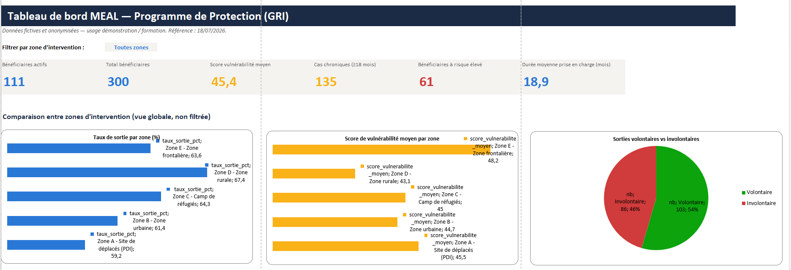
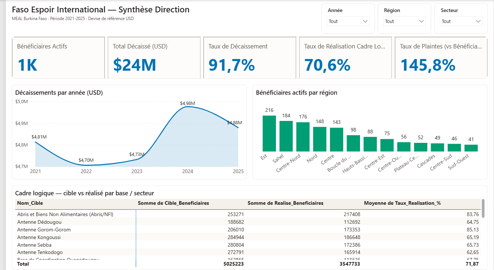

Maîtrise technique réelle
Power BI & DAX, SQL, Python (pandas), Excel avancé et KoboToolbox — des outils utilisés dans mes projets, pas juste listés sur un CV.
Spécialiste MEAL · Data Analyst
J'aide les ONG, les agences internationales et les entreprises à faire parler leurs données de suivi & évaluation — Power BI, SQL, Python, KoboToolbox — pour livrer des tableaux de bord clairs et des recommandations exploitables.
Réponse rapide · Disponible en français et en anglais
Pourquoi moi
Power BI & DAX, SQL, Python (pandas), Excel avancé et KoboToolbox — des outils utilisés dans mes projets, pas juste listés sur un CV.
Cadre logique, théorie du changement, indicateurs de suivi, redevabilité (CHS) et protection des données bénéficiaires — le langage du secteur, pas seulement celui de la donnée.
Jamais juste un graphique : un rapport rédigé, une présentation, un dashboard interactif et des recommandations prêtes pour la décision.
Un atout direct pour les organisations internationales : reporting, présentations et échanges en français comme en anglais.
Études de cas
Chaque projet part d'une question métier réelle et va jusqu'au livrable final : rapport, présentation ou dashboard.
Global Relief International (étude de cas)
Analyse MEAL complète d'un programme de protection humanitaire (300 bénéficiaires) : base SQLite, 15 requêtes SQL répondant à des questions concrètes d'un coordinateur terrain, puis génération automatique d'un rapport Word, d'une présentation PowerPoint, d'un dashboard Excel et d'un dashboard web — tous cohérents entre eux.
Résultat concret : segmentation des bénéficiaires par niveau de risque, identification des zones à taux de sortie élevé, alerte de conformité sur les suivis manquants.

Faso Espoir International
Rapport Power BI multipage (6 pages, 31 mesures DAX) pour la direction d'une ONG intervenant au Burkina Faso : suivi programmatique, financier, opérationnel et de redevabilité sur 2021-2025.

Résultat : synthèse direction en une page + 5 pages de détail par fonction MEAL (programme, finance, opérations, redevabilité).
Suivi des commandes clients / produits
Tableau de bord interactif à 4 pages avec navigation personnalisée : KPI, carte géographique des ventes par pays, répartition par catégorie, tendance mensuelle.
Résultat : vue géographique et temporelle de l'activité commerciale.
Ventes au détail
10 questions métier résolues sur 2000 transactions : agrégations, fonctions fenêtre (RANK()), CTE.
Résultat : identification du mois le plus performant par année, top 5 clients, répartition par tranche horaire.
Ventes en magasin
Pipeline pandas complet (nettoyage, colonnes calculées, agrégations) débouchant sur des visualisations et un rapport Word généré automatiquement.
Résultat : rapport illustré généré automatiquement, sans mise en forme manuelle.
Boîte à outils
Imaginez un coordinateur terrain sommé, en pleine réunion de bailleurs, de justifier pourquoi le taux de sortie grimpe dans une zone d'intervention — avec pour seul outil un tableur figé depuis trois semaines. Faute de la bonne donnée au bon moment, la décision se prend à l'instinct, plutôt que sur preuve.
C'est exactement ce point de bascule que je cible : transformer une base brute en dashboard qui répond avant même que la question soit posée en réunion.
Disponible pour un poste, une mission ou une collaboration — en français comme en anglais.